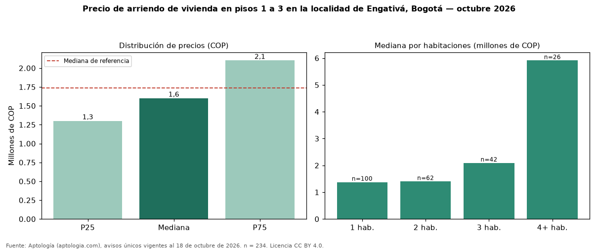

Precio de arriendo de vivienda en pisos 1 a 3 en la localidad de Engativá, Bogotá — octubre 2026
Con 234 avisos únicos, el canon mediano de vivienda en pisos 1 a 3 en arriendo en la localidad de Engativá, Bogotá es COP 1.600.000 al mes. Frente a toda la oferta de arriendo en la localidad de Engativá, Bogotá (COP 1.734.500), la diferencia es de 8 % por debajo. En todo Bogotá, la misma combinación tiene mediana COP 3.200.000 (−50 %). Por metro cuadrado, la mediana es COP 30.000/m² (−4 % frente a COP 31.250/m²), puesto 10 de 12 localidades comparables. Cruzando con la oferta de venta equivalente, la rentabilidad bruta implícita es 7,5 % anual. Por habitaciones: 1 habitación, COP 1.375.000 (n = 100); 2 habitaciones, COP 1.400.000 (n = 62); 3 habitaciones, COP 2.090.000 (n = 42); 4 o más habitaciones, COP 5.910.000 (n = 26). El área mediana es 50 m² (referencia: 53 m²). Datos abiertos CC BY 4.0 de Aptología; fuente y búsqueda de inmuebles: https://www.aptologia.com/arriendo-zona/bogota/localidad-engativa. Archivos: PDF de 2 páginas, CSV con las cifras y gráfica PNG.

| Avisos únicos | 234 |
|---|---|
| Percentil 25 | COP 1.300.000 |
| Mediana | COP 1.600.000 |
| Percentil 75 | COP 2.100.000 |
| Mediana por m² | COP 30.000 |
Fuente: avisos vigentes de portales inmobiliarios recopilados por Aptología, deduplicados (mínimo 30 avisos únicos por celda). Precios pedidos, no cerrados. Fecha: 2026-10-18.